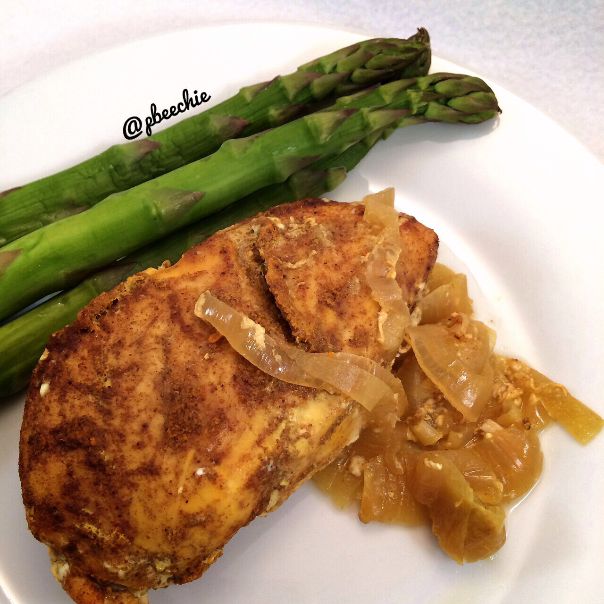

Curried Chicken (Crockpot)
I've been going to the local library recently after Jesse told me that we have one that's less than a mile away. I've been buying used books to read from amazon but the prices have been adding up quickly... He told me there was a library hidden away real close and I was shocked. So every weekend we've been taking a walk and returning home with books. This weekend, I stumbled upon the cookbook section! I don't know why I didn't expect them to have this. But it made me happy. So I got this crockpot cookbook and adapted a curry chicken recipe. I love curry so much and this made my house smell absolutely incredible. That's the downside of crockpots. Easy to cook, but you have to be tortured by the wonderful smell all day while it cooks D; 
- 2 TBSP ground coriander
- 1/2 TBSP ground cumin
- 1/2 TBSP ground turmeric
- 1/4 tsp chili powder
- 1 tsp ground mustard
- 1/4 tsp ground cloves
- 1/4 tsp ground cardamom
- 1/4 tsp ground cinnamon
- 1.5 TBSP apple cider vinegar
- 1.5 TBSP water
- 1 tsp olive oil
- 1 whole onion
- 3 chicken breasts (1.5-2 lbs)
First, make the curry paste. In a bowl, mix all of the spices. Then add the apple cider vinegar and water. Mix evenly to form a paste.
Next, spray your crockpot with a nonstick spray. Slice the onion into rings and add to the crockpot.
Take 1.5 TBSP of your curry paste and mix with 1 tsp olive oil (you should have a total of about 3 TBSP curry paste, but you only need 1.5 TBSP). After you've mixed it with the olive oil, rub the chicken to coat both sides. Place the chicken breasts in the crockpot on top of the onions. Cover the crockpot and cook everything on high for 3 hours. Serve!